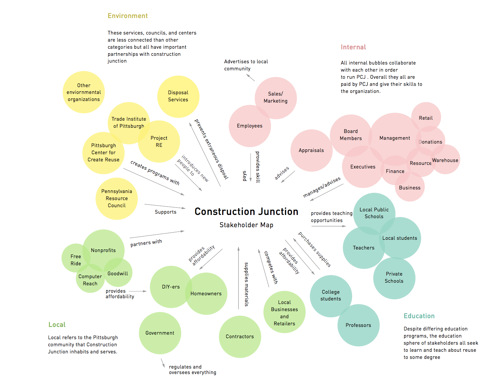
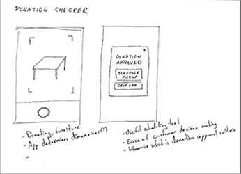
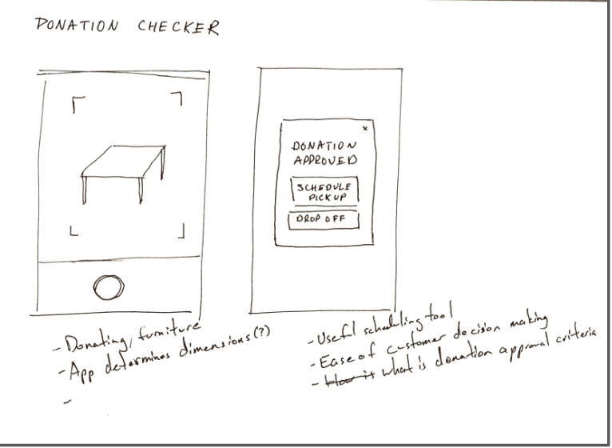
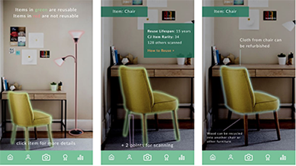

PROBLEM
Our client is Construction Junction, a non-profit warehouse in Pittsburgh, supplying used goods
and construction materials at reduced prices. After doing some introductory research,
my team and I realized that although they sell a lot of useful things,
there is a lack of brand awarenessand understanding
the applicability of their productsin a daily use context.
Our client is Construction Junction, a non-profit warehouse in Pittsburgh, supplying used goods
and construction materials at reduced prices. After doing some introductory research,
my team and I realized that although they sell a lot of useful things,
there is a lack of brand awarenessand understanding
the applicability of their productsin a daily use context.

WORD OF MOUTH MARKETING
STRATEGY
Since Construction Junction has all the social media
platforms they need, we decided to increase efforts
for word of mouth marketing. We targeted children,
since they are the most effective way to marketing
in a community, especially through school.
Since Construction Junction has all the social media
platforms they need, we decided to increase efforts
for word of mouth marketing. We targeted children,
since they are the most effective way to marketing
in a community, especially through school.




GAMIFICATION USING AUGMENTED REALITY
By creating a gamelike application, we can both
engage students while teaching them about how they can reuse specific objects,
allowing them to bring back what they learn at school to the home environment


By creating a gamelike application, we can both
engage students while teaching them about how they can reuse specific objects,
allowing them to bring back what they learn at school to the home environment
FINAL DESIGN
Through the Junction Journey, we aim to build the awareness
of our brand and motivate our community to be more environmentally
friendly through targeting a young age group, whom we can leverage
for their excitement and accessibility to peers. For Construction Junction,
this is invaluable as they build more brand awareness and they are able to
collect data through their app on how to better market themselves.
Through the Junction Journey, we aim to build the awareness
of our brand and motivate our community to be more environmentally
friendly through targeting a young age group, whom we can leverage
for their excitement and accessibility to peers. For Construction Junction,
this is invaluable as they build more brand awareness and they are able to
collect data through their app on how to better market themselves.
View Prototype View Roadmap